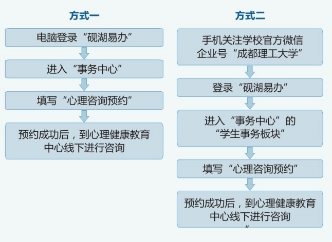

心理咨询预约
事项编号：1042
| 办理方式 | 线上线下结合办理 | 事项性质 | 服务事项 |
| 办理途径 | 线上线下结合 | 办理时间 | 上午8:00-12:00，下午2:30-6:00 |
| 咨询电话 | 028-84075525 | 监督电话 | 暂无 |
1.如下：

暂无其他说明
- 服务人群：
- 离退休人员,退休校友教职工,研究生,学校管理员,教师,学生
- 所属部门：
- 心理健康教育中心
- 服务日期：
- 长期有效
办理入口
心理咨询预约
心理咨询预约
| 办理方式 | 线上线下结合办理 | 事项性质 | 服务事项 |
| 办理途径 | 线上线下结合 | 办理时间 | 上午8:00-12:00，下午2:30-6:00 |
| 咨询电话 | 028-84075525 | 监督电话 | 暂无 |
1.如下：

暂无其他说明
心理咨询预约